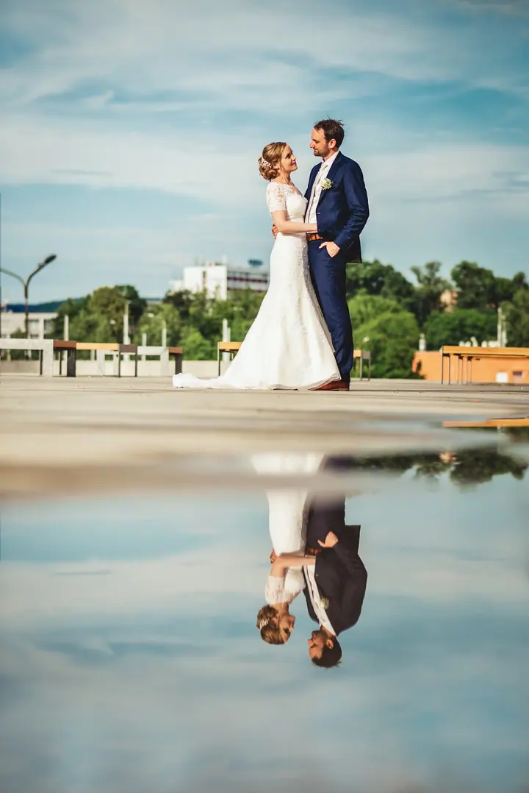
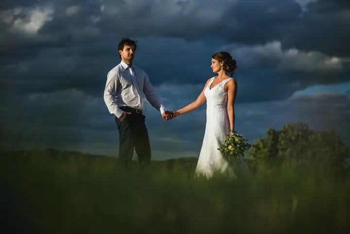

Svatební focení
Váš svatební den vyprávím autenticky a nadčasově, se smíchem, dojetím i důležitými maličkostmi. Provedu vás vším, a když přijdou chvíle, které patří jen vám, budu neviditelný.

Svatební fotograf
Jmenuji se Petr Bukovjan a fotím hlavně svatby, ale také rodiny, páry a miminka. Svatební den je pro mě především o lidech, o smíchu, dojetí a maličkostech, kterých si v tu chvíli skoro nikdo nevšimne.
Zeptat se na termín
Váš svatební den vyprávím autenticky a nadčasově, se smíchem, dojetím i důležitými maličkostmi. Provedu vás vším, a když přijdou chvíle, které patří jen vám, budu neviditelný.
Společný čas ve dvou, uchovaný ve vzpomínkách. Hodina venku v podvečerním světle, bez stresu a strojeného pózování.
Co bych tu měl psát o sobě? Že jsem ten nejlepší svatební fotograf, používám jen tu nejlepší techniku a mám recept na modrou oblohu? To by byly jen takové ty obvyklé kecy. Prostě mám kliku, že ty nejlepší svatby fotím já.
Rád se potkávám s lidmi. Věřím, že každý okamžik má svůj příběh, jedinečný a plný emocí, a mým posláním je proměnit ho ve fotky, které vás budou provázet celý život. Místo svatby přitom není až tak důležité. Důležitá je atmosféra, smích a lidé kolem vás.
Prý je focení se mnou mimořádně pohodové. Provedu vás vším, pomůžu vám uvolnit se a ukážu, že i focení může být zábava. A v chvílích, které patří jen vám, budu neviditelný.

Napište mi nebo zavolejte, kdy a kde plánujete svatbu nebo focení. Jestli vás moje práce baví, rád vám sdělím veškeré podrobnosti.
Probereme, jak si den nebo focení představujete. Outdoor focení plánuji ideálně na podvečer, newborn pěkně u vás doma.
Provedu vás vším a pomůžu vám uvolnit se. V nejdůležitějších chvílích budu neviditelný, abyste si je užili nerušeně.
Fotky vyberu a upravím za vás, ať to máte hezky bez práce. Dostanete je v elektronické podobě.
Focení trvá zhruba hodinu a stojí 2500 Kč. Dostanete 20 až 30 fotek v elektronické podobě podle mého výběru.
Ano, dopravu počítám 7 Kč za kilometr z Halenkova.
Svatba je pokaždé jiná, proto mi napište nebo zavolejte. Rád vám sdělím veškeré podrobnosti.
Vůbec ne. Provedu vás vším, pomůžu vám uvolnit se a ukážu, že i focení může být zábava.